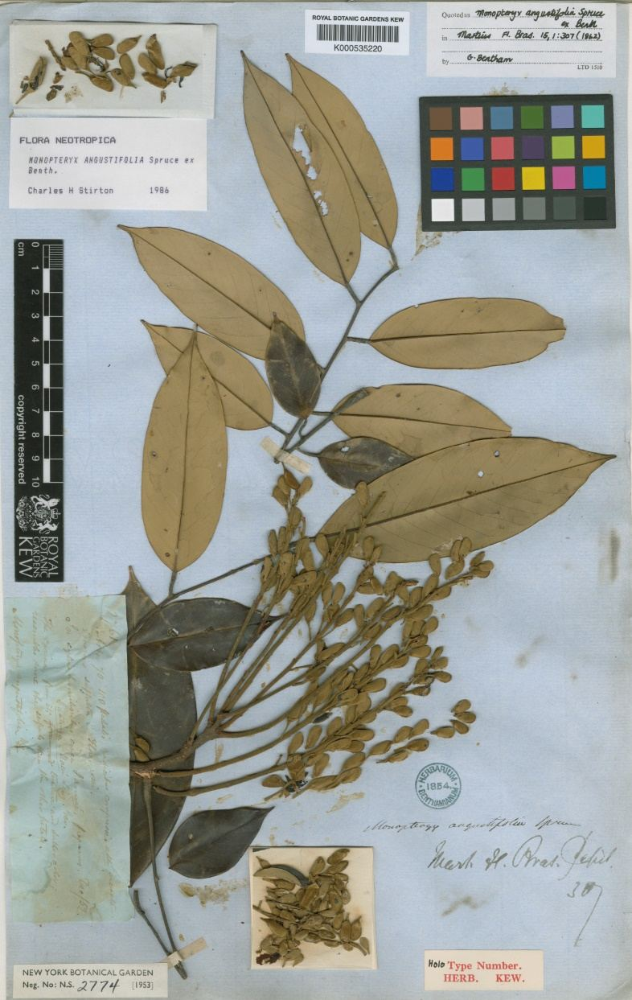
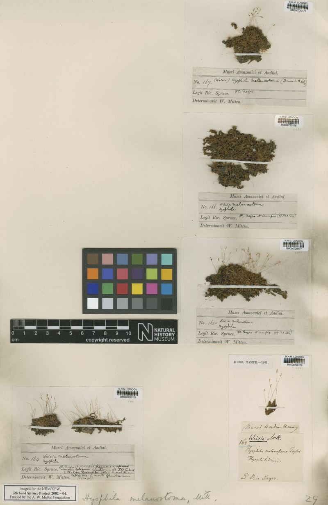
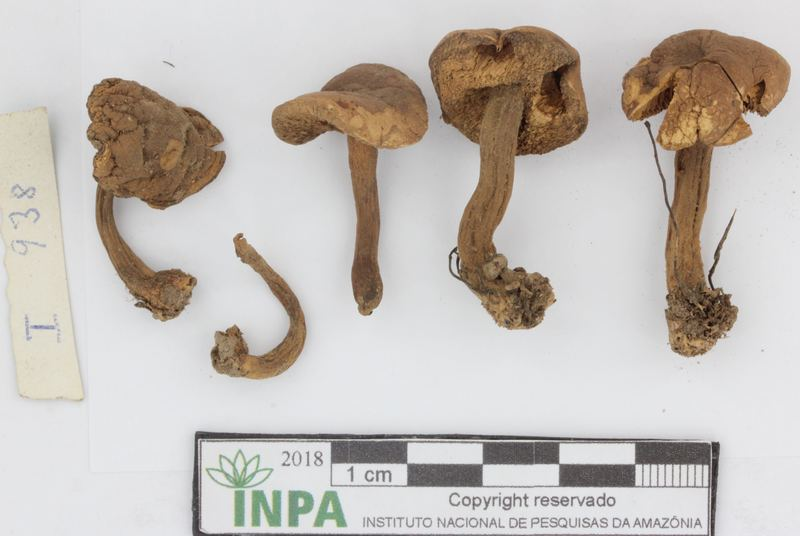
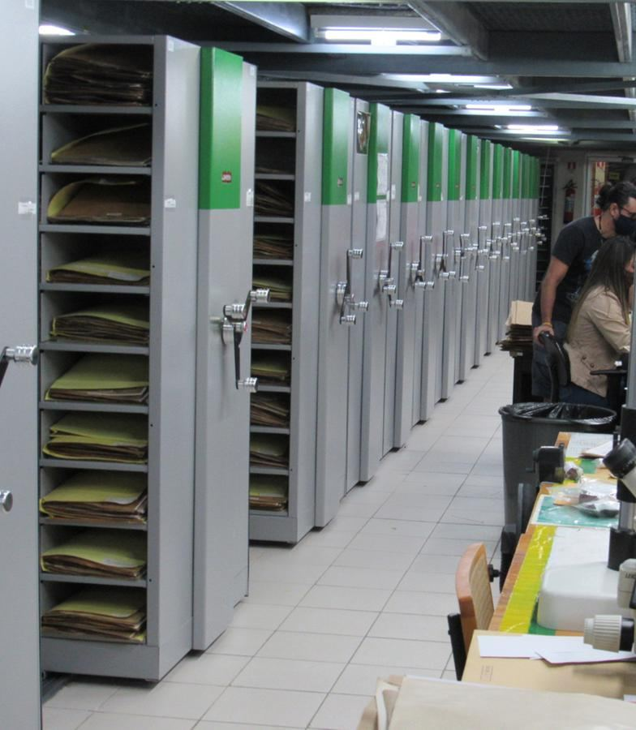

Coleções, dados e conhecimento científico para apoiar a conservação da biodiversidade no Alto Rio Negro
Conservação · Alto Rio Negro
Plantas e fungosdo Alto Rio Negro.
O Tsiino Hiiwiida reúne expedições, coleções históricas, identificação taxonômica, DNA e dados públicos para ampliar o conhecimento sobre a flora e a funga da Cabeça do Cachorro.
Campo, acervos e novos registros
O Alto Rio Negro, no noroeste da Amazônia, combina campinaranas, florestas de terra firme, igapós, formações aluviais e serras em uma região reconhecida como uma das grandes lacunas de conhecimento da biodiversidade brasileira.
O projeto integra registros históricos acumulados em herbários, bases públicas e plataformas agregadoras com as coletas realizadas nas expedições atuais. Essa leitura conjunta evidencia o que já foi documentado, onde ainda existem vazios de amostragem e a contribuição das expedições do projeto para a documentação da Cabeça do Cachorro.
As coleções biológicas sustentam a rastreabilidade dos dados: cada voucher pode ser revisado, comparado, georreferenciado, associado a amostras de tecido e incorporado a análises taxonômicas, filogenéticas e ambientais. O resultado é uma base pública para inventários, revisões, biomonitoramento e estratégias de conservação.
Campo, herbários, bases públicas e amostras moleculares formam uma infraestrutura comum para documentar plantas, fungos, habitats e lacunas de conhecimento no Alto Rio Negro.
170+anos de expedições e coleções históricas
2fontes de dados integradas ao painel
4leituras: geral, fungos, fanerógamas e criptógamas

Exsicata · fanerógamaVoucher, etiqueta e material fértil preservados.

Exsicata · criptógamaBriófitas, samambaias ou licófitas revisadas.

Voucher · fungoRegistro associado a coleta, substrato e identificação.

Acervos
Viajantes, coleções e novas expedições
Wallace
Primeiras leituras do Rio Negro
Retratos, mapas e registros históricos ajudam a situar a longa história de exploração científica da região.
Spruce
Coletas que atravessam séculos
Exsicatas, cadernos de campo e coleções históricas conectam expedições antigas às perguntas atuais.
Ducke
Botânica amazônica em revisão
O estudo de coleções permite revisitar identificações, lacunas de coleta e vieses históricos de amostragem.
Expedições científicas recentes
Novas coletas na Cabeça do Cachorro
Trilhas, rios, campinas, florestas e serras ampliam a documentação atual do Alto Rio Negro.
Coleções biológicas
Coleções como infraestrutura
Armários, etiquetas, vouchers e amostras conectam campo, taxonomia, DNA e bancos públicos.
Indicadores gerais
Os painéis abaixo são atualizados a partir de um catálogo validado previamente em R, reunindo as coletas das expedições atuais e os registros já existentes para a região, obtidos de coleções e bases agregadoras.
O painel geral e os painéis por grupo mostram o total e a proporção de registros das expedições Tsiino Hiiwiida em relação ao conjunto de dados. O painel geral também mostra o nível de identificação dos registros — até espécie, até gênero, até família ou indeterminados — para acompanhar a qualidade taxonômica da base.
Fanerógamas
Plantas com sementes
Árvores, lianas, arbustos, ervas e táxons de interesse para revisão taxonômica, história evolutiva e usos potenciais.
Criptógamas
Briófitas, samambaias e licófitas
Grupos sensíveis a microhabitats, importantes para leitura ambiental, biomonitoramento e diversidade críptica.
Fungos
Funga em campo
Macrofungos, fungos liquenizados e linhagens associadas a substratos, hospedeiros e processos ecológicos.
EncontradoExpedições Tsiino Hiiwiida
Expedições Tsiino Hiiwiida lido em C:/repos/cabeca_cachorro/_input_data/dwc_expedicoes_tsiino_validado.xlsx. 1.645 registros lidos; 1.314 registros classificados para o painel.
EncontradoColeções existentes / GBIF
Coleções existentes / GBIF lido em C:/repos/cabeca_cachorro/_input_data/dwc_gbif_colecoes_validado.xlsx. 16.853 registros lidos; 16.853 registros classificados para o painel.
Painel integrado
Painel geral · flora e funga
Síntese integrada da flora e funga documentada pelas coleções existentes e pelas expedições atuais. O painel reúne fanerógamas, criptógamas e fungos, evidenciando riqueza, gêneros, famílias, registros, georreferenciamento e a contribuição das expedições do projeto.
3.057espécies
Apenas nomes completos identificados em nível de espécie.
1.205gêneros
Gêneros distintos considerando registros até espécie ou até gênero.
305famílias
Famílias distintas considerando registros até espécie, gênero ou família.
18.167registros
Todas as ocorrências do grupo, incluindo espécie, gênero, família e indeterminados.
1.314registros das expedições
7,2% dos registros deste painel foram coletados nas expedições Tsiino Hiiwiida.
11.265georreferenciados
Todos os registros do grupo com latitude e longitude disponíveis.
Registros por fonte
Expedições1.314 · 7,2%
Coleções/GBIF16.853 · 92,8%
Nível de identificação dos registros
Até espécie13.307 · 73,2%
Até gênero3.826 · 21,1%
Até família1.019 · 5,6%
Indeterminados15 · 0,1%
Registros ao longo do tempo
Pico: 3.365 registros em um ano · série 1849–2026
Registros por grupo biológico
Fanerógamas15.694 · 86,4%
Criptógamas2.007 · 11,0%
Fungos466 · 2,6%
Famílias com maior riqueza
Fabaceae339 spp.
Rubiaceae165 spp.
Melastomataceae149 spp.
Orchidaceae149 spp.
Apocynaceae75 spp.
Annonaceae68 spp.
Chrysobalanaceae61 spp.
Gêneros com maior riqueza
Miconia64 spp.
Palicourea49 spp.
Swartzia37 spp.
Inga29 spp.
Piper28 spp.
Myrcia27 spp.
Clusia25 spp.
Painéis por grupo
Fungos
Fungos
Leitura específica para macrofungos, fungos liquenizados, fungos parasitas e demais registros classificados no reino Fungi. O painel ajuda a acompanhar um dos grupos menos documentados da Amazônia.
72espécies
Apenas nomes completos identificados em nível de espécie.
98gêneros
Gêneros distintos considerando registros até espécie ou até gênero.
65famílias
Famílias distintas considerando registros até espécie, gênero ou família.
466registros
Todas as ocorrências do grupo, incluindo espécie, gênero, família e indeterminados.
84registros das expedições
18% dos registros deste painel foram coletados nas expedições Tsiino Hiiwiida.
337georreferenciados
Todos os registros do grupo com latitude e longitude disponíveis.
Registros por fonte
Expedições84 · 18,0%
Coleções/GBIF382 · 82,0%
Registros ao longo do tempo
Pico: 94 registros em um ano · série 1853–2026
Famílias com maior riqueza
Polyporaceae10 spp.
Cladoniaceae8 spp.
Coccocarpiaceae3 spp.
Hymenochaetaceae3 spp.
Panaceae3 spp.
Trypetheliaceae3 spp.
Auriculariaceae2 spp.
Gêneros com maior riqueza
Cladonia5 spp.
Coccocarpia3 spp.
Panus3 spp.
Porina3 spp.
Amauroderma2 spp.
Astrothelium2 spp.
Aulaxina2 spp.
Ver lista completa de espécies74 espécies
Carregando a lista...
Fanerógamas
Fanerógamas
Síntese das plantas com sementes registradas na região, incluindo árvores, lianas, arbustos, ervas e espécies de interesse para revisões taxonômicas, história evolutiva, bioeconomia e segurança alimentar.
2.582espécies
Apenas nomes completos identificados em nível de espécie.
921gêneros
Gêneros distintos considerando registros até espécie ou até gênero.
170famílias
Famílias distintas considerando registros até espécie, gênero ou família.
15.694registros
Todas as ocorrências do grupo, incluindo espécie, gênero, família e indeterminados.
830registros das expedições
5,3% dos registros deste painel foram coletados nas expedições Tsiino Hiiwiida.
9.402georreferenciados
Todos os registros do grupo com latitude e longitude disponíveis.
Registros por fonte
Expedições830 · 5,3%
Coleções/GBIF14.864 · 94,7%
Registros ao longo do tempo
Pico: 3.271 registros em um ano · série 1849–2026
Famílias com maior riqueza
Fabaceae339 spp.
Rubiaceae165 spp.
Melastomataceae149 spp.
Orchidaceae149 spp.
Apocynaceae75 spp.
Annonaceae68 spp.
Chrysobalanaceae61 spp.
Gêneros com maior riqueza
Miconia64 spp.
Palicourea49 spp.
Swartzia37 spp.
Inga29 spp.
Piper28 spp.
Myrcia27 spp.
Clusia25 spp.
Ver lista completa de espécies2.582 espécies
Carregando a lista...
Criptógamas
Criptógamas
Painel dedicado a briófitas, samambaias, licófitas e outros grupos historicamente subamostrados, importantes para compreender microhabitats, biomonitoramento e diversidade críptica.
403espécies
Apenas nomes completos identificados em nível de espécie.
187gêneros
Gêneros distintos considerando registros até espécie ou até gênero.
70famílias
Famílias distintas considerando registros até espécie, gênero ou família.
2.007registros
Todas as ocorrências do grupo, incluindo espécie, gênero, família e indeterminados.
400registros das expedições
19,9% dos registros deste painel foram coletados nas expedições Tsiino Hiiwiida.
1.526georreferenciados
Todos os registros do grupo com latitude e longitude disponíveis.
Registros por fonte
Expedições400 · 19,9%
Coleções/GBIF1.607 · 80,1%
Registros ao longo do tempo
Pico: 616 registros em um ano · série 1849–2026
Famílias com maior riqueza
Lejeuneaceae55 spp.
Calymperaceae23 spp.
Hymenophyllaceae22 spp.
Polypodiaceae22 spp.
Pilotrichaceae19 spp.
Selaginellaceae19 spp.
Dryopteridaceae18 spp.
Gêneros com maior riqueza
Selaginella19 spp.
Fissidens15 spp.
Trichomanes15 spp.
Lindsaea13 spp.
Elaphoglossum12 spp.
Syrrhopodon11 spp.
Sphagnum10 spp.
Ver lista completa de espécies403 espécies
Carregando a lista...
Infraestrutura dos dados
Conectar expedições atuais, coleções históricas, herbários amazônicos e bases agregadoras transforma registros dispersos em uma base rastreável para pesquisa, gestão e comunicação pública.
A curadoria dos dados passa por limpeza de nomes, padronização Darwin Core, validação taxonômica, revisão de coordenadas, organização de vouchers e integração com bancos públicos. Esse trabalho reduz ruídos, torna os registros comparáveis e permite que cada indicador volte a uma evidência verificável.
O painel segue uma lógica FAIR: dados encontráveis, acessíveis, interoperáveis e reutilizáveis. À medida que novas coletas entram no acervo, as informações podem circular entre herbários, GBIF, speciesLink, Jabot, Reflora, bancos moleculares e materiais de divulgação do Tsiino Hiiwiida.
Limpezanomes, duplicatas, campos vazios e grafias inconsistentesValidaçãoidentificações, famílias, gêneros, vouchers e coordenadasIntegraçãoexpedições, herbários, GBIF, speciesLink, Jabot e RefloraAcessosínteses públicas, dados interoperáveis e documentação contínua
Curadoria e validaçãoRevisão taxonômica, digitalização, checagem de vouchers e organização dos registros para circulação pública.
Fluxo dos dados
Coleta e voucher
Identificação revisável
Padronização Darwin Core
Integração com bases públicas
Do registro à conservação
Os indicadores desta página são uma camada pública de leitura dos dados. Cada número se conecta a uma coleta, um voucher, uma identificação revisável e, quando disponível, uma amostra associada para estudos moleculares.
Ao reunir coleções históricas, expedições atuais, validação taxonômica, digitalização de acervos e amostras de DNA, o Tsiino Hiiwiida transforma dados dispersos em uma base de conhecimento capaz de apoiar inventários, pesquisas evolutivas, políticas de conservação, bioeconomia e comunicação pública sobre a biodiversidade do Alto Rio Negro.